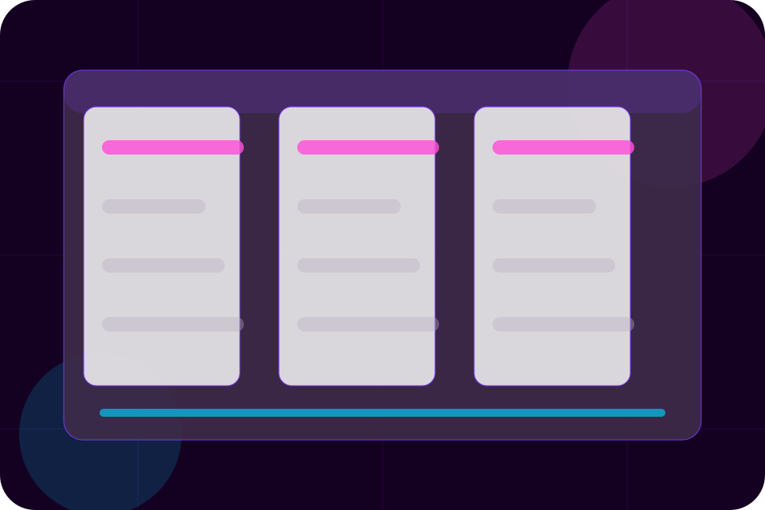
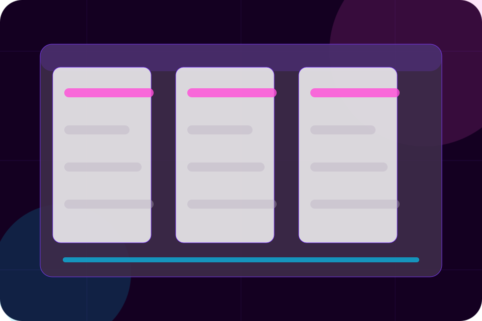
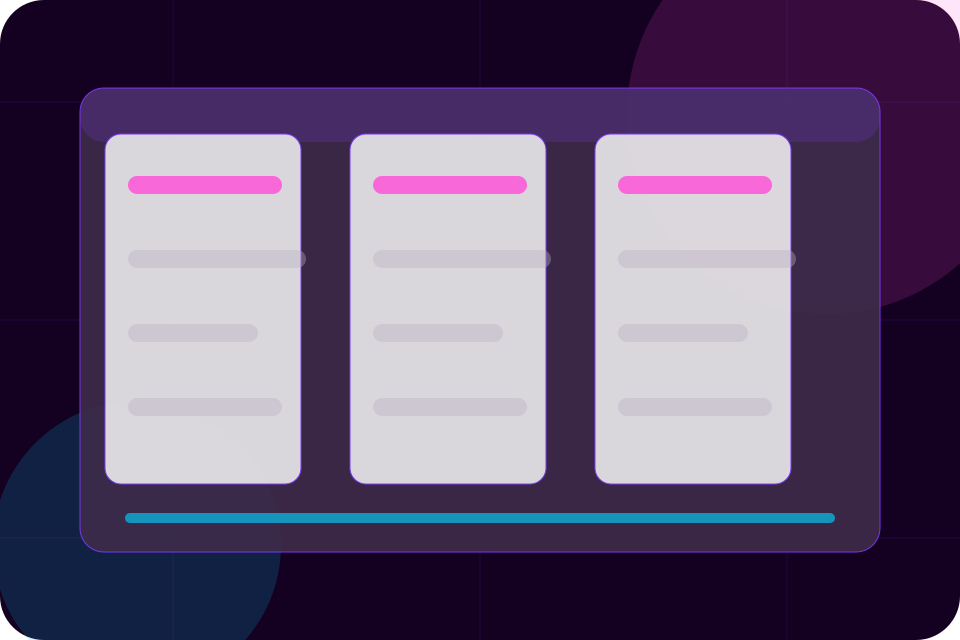

Context
Work gives the page a specific angle instead of repeating the navigation label.
Projects / 01
Projects opens as a clear utilities decision hub: what Clear offers, who it helps, why it matters, and which route to take first.
The first screen combines positioning, proof, primary action, and fast internal navigation, so people can act immediately or compare the rest of the projects route with context.
Purple service hero
Select the closest route and Clear keeps the next step, proof, and follow-up expectation aligned with public service access.

Projects / 02
Work adds civic context to the projects route, using the playful utility account flow structure to support public service access before visitors choose a next step.
Clear uses rounded tariff cards and focused copy to make the decision easier to scan, aligning the section with public service access rather than filling space.
Explore ProjectsWork gives the page a specific angle instead of repeating the navigation label.


Projects / 03
Planning makes commercial comparison easier by showing fit, scope, and terms before utilities visitors ask for the next step.
The layout keeps price-sensitive decisions honest: it separates starting scope, fuller delivery, and ongoing support so the visitor can ask a sharper question.
Explore ProjectsWho the offer is for, which scope it suits, and when a different route may be better.
What is included clearly enough for utilities, water & essential infrastructure visitors to compare value without hidden jargon.
The practical details that should be confirmed before someone asks to request service.
Projects / 04
Delivery adds civic context to the projects route, using the playful utility account flow structure to support public service access before visitors choose a next step.
Clear uses rounded tariff cards and focused copy to make the decision easier to scan, aligning the section with public service access rather than filling space.
Explore ProjectsDelivery gives the page a specific angle instead of repeating the navigation label.
The rounded tariff cards show what to compare, what to avoid, and what matters most for utilities, water & essential infrastructure visitors.
The final cue points to a useful internal route so the section keeps the journey moving.
Projects / 05
Maintenance explains the operating sequence so visitors can see how the first request becomes a clear recommendation and follow-up.
The steps are written from the visitor side: what they do first, what Clear clarifies, what they receive, and how support continues.
Explore ProjectsHow visitors begin this route and what detail is useful at the first step.
What Clear reviews, filters, or explains before recommending the next move.
What the visitor receives afterward, including support, proof, or a handoff to the next page.
Projects / 06
Impact shows what changes after the work: clearer decisions, visible progress, and proof points that connect the offer to real outcomes.
The layout connects before-and-after thinking with measured outcomes, making the result easy to scan without promising what the business cannot guarantee.
Explore ProjectsThe uncertainty, delay, or missed opportunity visitors bring into impact.
Projects / 07
Timelines explains the operating sequence so visitors can see how the first request becomes a clear recommendation and follow-up.
The steps are written from the visitor side: what they do first, what Clear clarifies, what they receive, and how support continues.
Explore ProjectsHow visitors begin this route and what detail is useful at the first step.
What Clear reviews, filters, or explains before recommending the next move.
What the visitor receives afterward, including support, proof, or a handoff to the next page.
Projects / 08
Updates adds civic context to the projects route, using the playful utility account flow structure to support public service access before visitors choose a next step.
Clear uses rounded tariff cards and focused copy to make the decision easier to scan, aligning the section with public service access rather than filling space.
Explore ProjectsUpdates gives the page a specific angle instead of repeating the navigation label.
The rounded tariff cards show what to compare, what to avoid, and what matters most for utilities, water & essential infrastructure visitors.
The final cue points to a useful internal route so the section keeps the journey moving.
Projects / 09
Results shows what changes after the work: clearer decisions, visible progress, and proof points that connect the offer to real outcomes.
The layout connects before-and-after thinking with measured outcomes, making the result easy to scan without promising what the business cannot guarantee.
Explore ProjectsThe uncertainty, delay, or missed opportunity visitors bring into results.
The clearer, safer, or more valuable state Clear is designed to support.
The visible cue that connects results to a believable decision, not a loose claim.
Projects / 10
Clear closes the projects route with a clear action, a quick reminder of the value, and a low-friction way to request service.
Visitors who are ready can use the primary action. Visitors who are still comparing can scan the section links, proof, and support routes before they request service.
Request ServiceThe final block keeps the choice simple: act now, compare one more proof route, or send enough detail for a focused response.
Request Servicepublic service access
A utility service site with bright service cards, friendly calculator modules, alert strips, and help routing. Projects ends with a direct path to request service, plus enough context for visitors who still need to compare.
Information is provided for planning and should be reviewed for the final client, location, and operating rules.